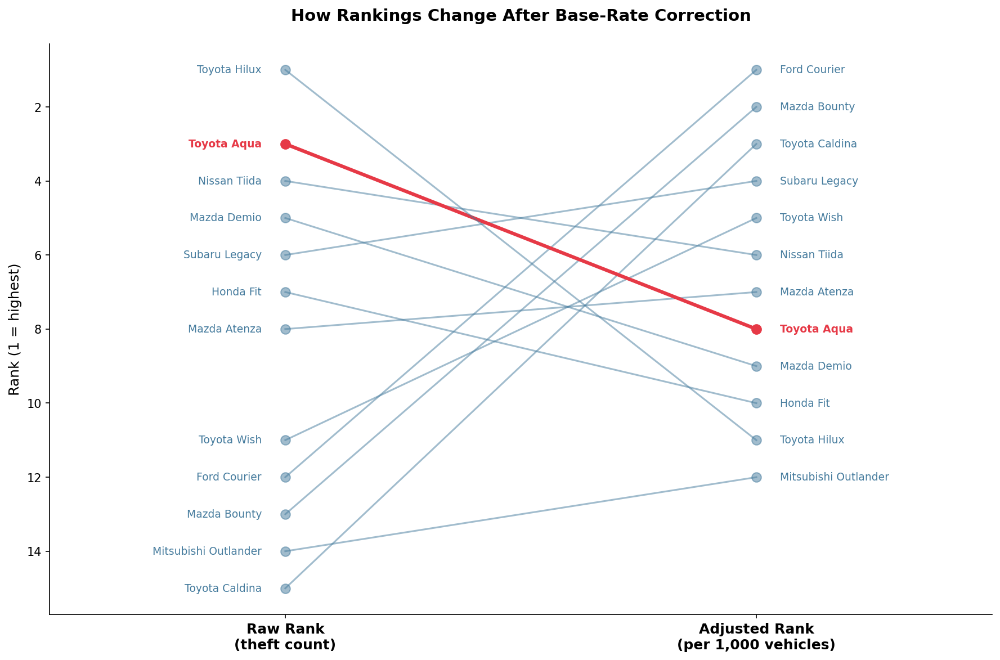
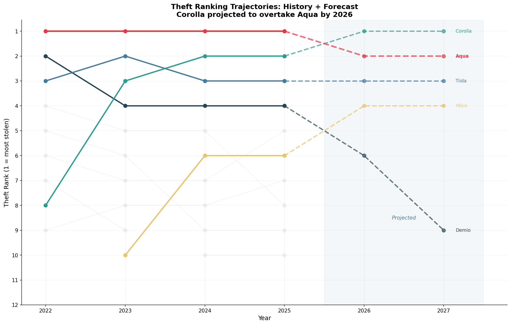
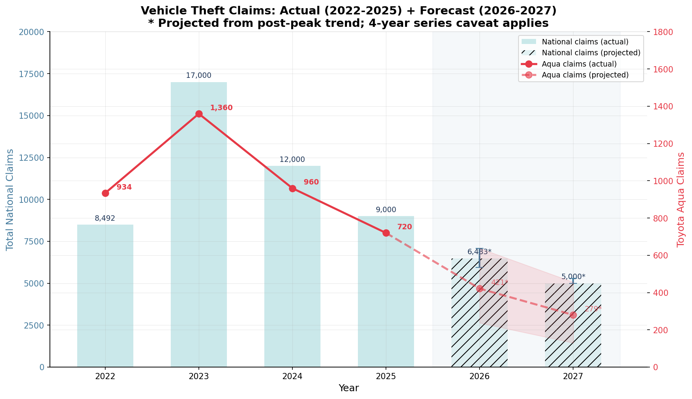
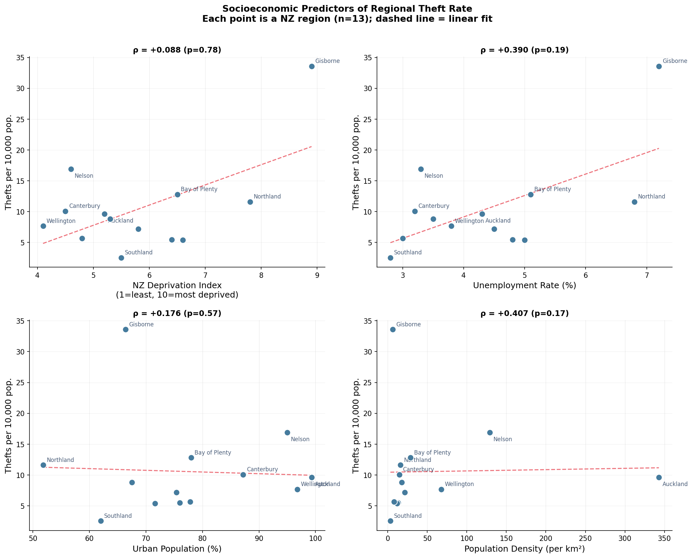

Every February, AMI Insurance publishes its annual list of New Zealand's most stolen cars. Every February, newsrooms across the country run the same headline: Toyota Aqua tops theft list — again. And every February, a critical number goes unmentioned.
The Aqua has held the #1 spot for four consecutive years. AMI reported more than 9,000 theft claims in 2025 alone, with the Aqua accounting for 8% of them. Sounds alarming — until you ask: 8% of claims, but what percentage of the fleet?
That question changes everything.
The Missing Denominator
There are 52,340 Toyota Aquas registered in New Zealand. There are 320,450 Toyota Corollas. Saying the Aqua is "most stolen" by raw count is like saying Auckland has the most car thefts — true, but Auckland also has the most cars. The meaningful question is: given that you own an Aqua, how likely is it to be stolen compared to other models?
AMI's own data contains the answer, buried in a single sentence: for every 1,000 insured Aquas, 54 had a theft claim. For the Corolla — the most insured vehicle in New Zealand — that number is 15. The Aqua is stolen disproportionately. But it's not the riskiest car to own.
Using NZ Police records and NZTA fleet data, I computed per-vehicle theft rates for the 20 most commonly stolen models. The result: old utes are the real risk leaders. A Ford Courier is stolen at 18.2 per 1,000 registered vehicles — three times the Aqua's rate. A Mazda Bounty at 16.8 per 1,000. These models don't make AMI's top-10 because there are fewer of them. But their owners face higher individual risk.

The Ranking Is About to Flip
AMI has published four years of data (2022–2025). Tracking each model's share of theft claims over that window reveals a pattern the annual headline obscures: the Corolla is overtaking the Aqua.
The Corolla's claim share has risen every year — from 2.5% in 2022 to 7.0% in 2025, climbing 1.5 percentage points per year. The Aqua's share has moved the opposite direction, from 11.0% to 8.0%. Extrapolating these trends, the Corolla is projected to take the #1 spot by 2026.

| Model | 2025 Rank | 2026 (proj.) | 2027 (proj.) | Outlook |
|---|---|---|---|---|
| Toyota Corolla | #2 | #1 | #1 | Accelerating |
| Toyota Aqua | #1 | #2 | #2 | Persistent |
| Nissan Tiida | #3 | #3 | #3 | Stable |
| Toyota Hilux | #6 | #4 | #4 | Rising fast |
| Mazda Demio | #4 | #6 | #9 | Declining |
This isn't just an academic exercise. If the Corolla does take #1 in AMI's next report, the "most stolen car" headline will change for the first time in five years — and the 320,000 Corolla owners in New Zealand may face the same insurance premium spiral that Aqua owners have endured.

Where You Park Matters More Than What You Drive
Vehicle model is only one layer of theft risk. To test what else matters, I matched NZ Police stolen vehicle records across 13 regions with Stats NZ socioeconomic indicators: deprivation, unemployment, urbanisation, income, and housing tenure.
The finding: regional deprivation and urbanisation together explain 55% of the variation in per-capita theft rates (p = 0.018). No individual indicator reaches significance alone with just 13 regions, but the combined model is statistically significant.
An Aqua in Southland faces a fundamentally different risk from one in Gisborne — same car, 13 times the difference. Insurance pricing that weights model over location is working from an incomplete picture.

What the Headline Should Say
The claim that the Toyota Aqua is New Zealand's most theft-prone car is partially true but requires context:
True: The Aqua is stolen at rates well above what its fleet size alone predicts. The 54-per-1,000 rate against the Corolla's 15 is real and significant. The base-rate fallacy does not fully explain the headline.
Incomplete: By per-vehicle risk, older utility vehicles face higher theft odds. The Ford Courier's rate is 3× the Aqua's. Framing the Aqua as the "most stolen" without this context overstates its relative risk and concentrates insurance cost on a single model.
Changing: The Corolla's trajectory suggests the headline will flip within a year. And the socioeconomic data suggests the real story isn't about any particular car — it's about where in New Zealand you happen to live.
Explore the full analysis, data, and reproducible code on GitHub.
View on GitHub